采集实例教程
一、前言
08cms的采集管理器是根据用户设定的规则采集其它网站上所需内容数据。
二、采集过程
- 2.1 采集模型添加
- 添加采集模型（其他管理->采集管理-》采集模型管理）。如图-1、图-2所示
1、点击添加，添加采集模型
2、填写采集模型名称和选中采集的文档模型
3、点击添加按钮，添加采集模型完毕
4、添加按钮完毕后，就会自动弹出采集字段设置的对话框，根据用户需求，勾选所需采集字段，提交完毕。
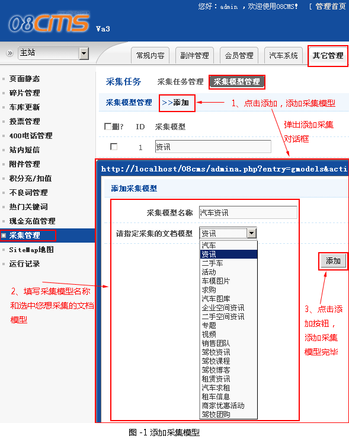
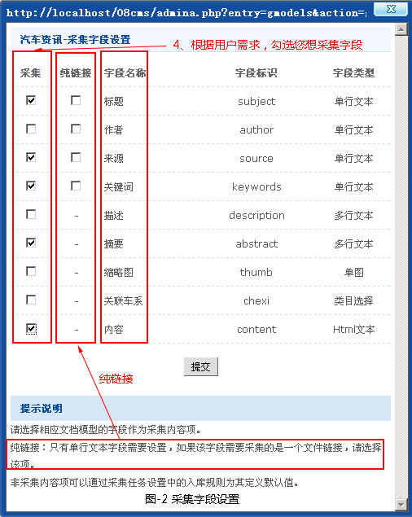
- 2.2 采集任务添加
- 添加采集任务（其他管理->采集管理-》采集任务管理）。如图-3所示
1、点击添加，弹出采集任务添加对话框
2、填写采集任务名称和选中采集模型
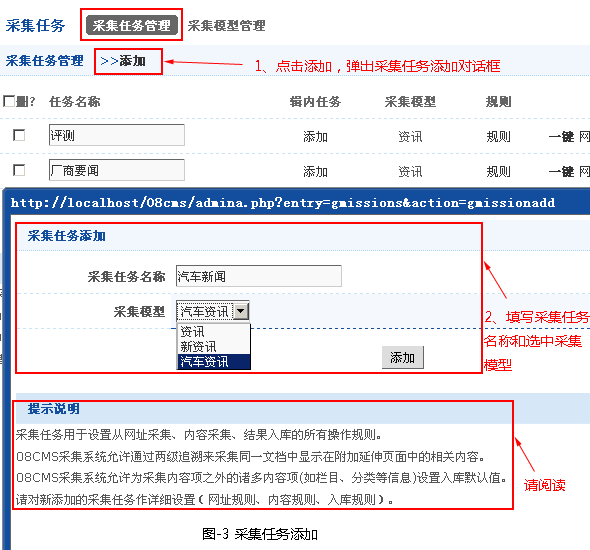
3、解析采集任务列表中的其他相关操作，如图-4所示
一键：“网址 内容 入库”一次操作完成
网址：按设置的网址规则采集网址
内容：按设置的内容规则采集内容
入库：按设置的入库规则进行入库
管理：对已经采集的内容进行“删除” “采集”“入库”“重置状态”处理
复制：复制本条采集任务，在需要新建一个相类似的采集任务时使用
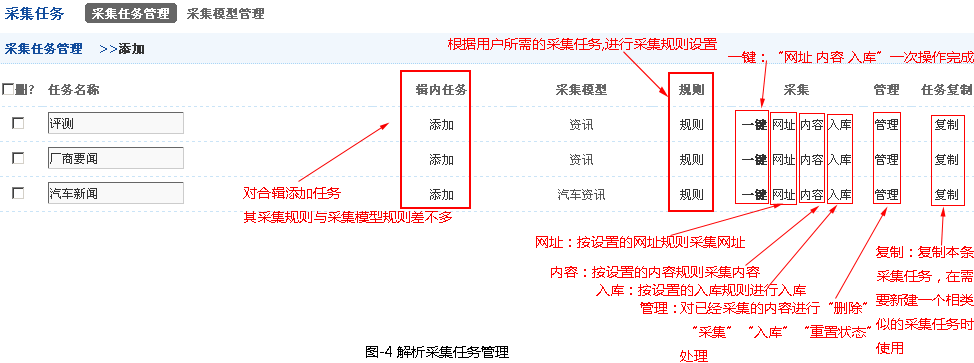
- 2.3 采集规则设置
- 采集规则步骤如下
第一、设置网址采集规则
1、在网站上搜索到用户所需采集的列表页面，进入该页面（如图-5所示）：
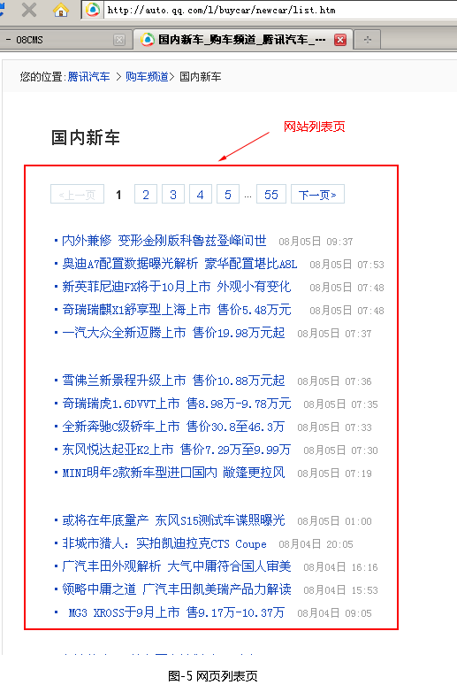
2、点击用户所需的采集任务中规则链接，弹出网址采集对话框。如图-6所示
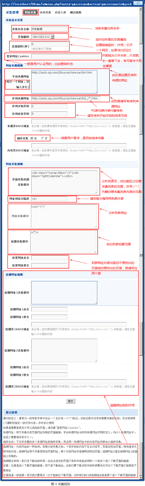
现分析图6中的基本信息：
a 采集基本设置：
a.1 采集任务名称-当前采集任务名称。
a.2 页面编码-用户所需页面编码。
a.3 连接超时(秒)-打开一个网页，如果5秒还没打开就视为打开失败，不然就会一直等下去，有可能会卡死在哪里。
a.4 登录网站Cookies-一般是用户认证用的，比如登陆状态。意思就是需要登录后才可以浏览的页面，请设置"登录网站Cookies"
b 网址来源规则:
b.2 手动来源网址-设置无序列来源的网址。(每行一个网址，可输入多行)
b.3 序列来源网址- 填写有序列来源网址，且有序的数字用（*）来代替。【* 通常为一段样板字串中包含一个且仅有一个(*)标记，该标记表示该项目需要采集的内容。另支持使用(?)通配符指定一段可变内容，并可多次使用 】
b.4 序列开始页码和结束页码-开始页码就是用户想以那个页面作为开始，结束页码就以结束页面作为采集终止。
b.5 来源页BASE地址-非必填，但如果来源页内有类似 <base href="http://xxx.xxx" /> 的标签，请在这里输入href里的内容。
b.6 倒序采集-是否对页面进行倒序采集。不仅所设置的多个来源网址按倒序采集，而且同一来源网址中的内容网址列表也以倒序采集。
b.7 内容页BASE地址-非必填，但如果内容页内有类似 <base href="http://xxx.xxx" />的标签，请在这里输入href里的内容
c.网址采集规则（如图-7所示）:
c.1 页面采集范围采集模印-分析列表页，找出能区分您想采集列表的范围，并用（*）代替您想采集列表内容的范围。如图-7所示
c.2 网址列表分隔符-分隔两两列表内容
c.3 网址采集模印-分析列表网址,可变的内容用（*）代替
c.4 标题采集模印-找出列表标题范围
c.5 结果网址必含:列表网址中必须包含数据，例如，两个http://xx.xx.com/a/xxx.html和http://xx.xx.com/b/xxx.html，其中用户只想用网址必须包含/a/,就在结果网址必含框中写入，进行测试时，刷选出所有含有/a/的网址。
c.6 结果网址禁含：列表网址中不需要数据，例如两个http://xx.xx.com/a/xxx.html和http://xx.xx.com/b/xxx.html，其中用户不想网址中有/b/,就在结果网址禁含框中写入，进行测试时，所有网址含/b/都不出现
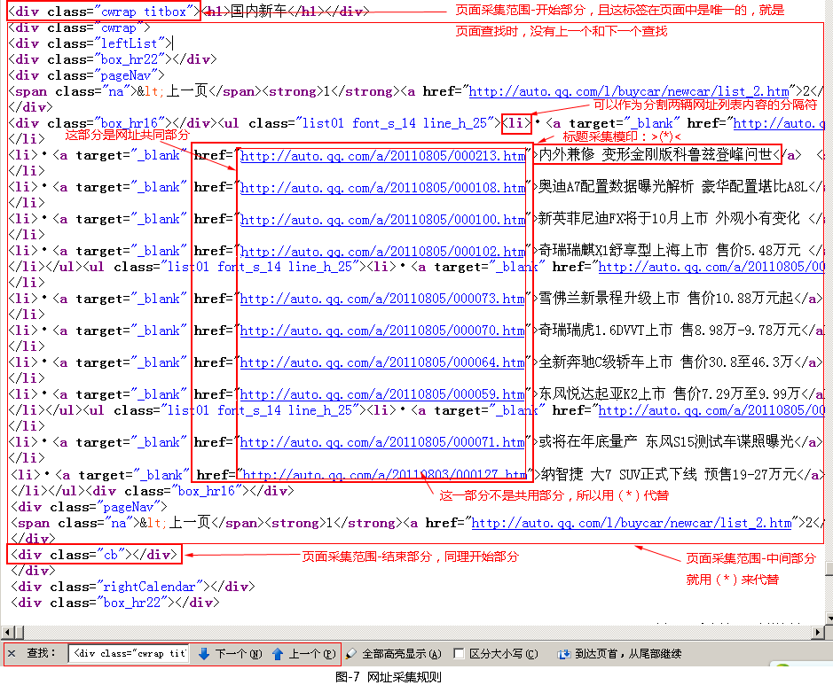
d.追溯网址规则: 追溯网址：内容网址的一种延伸。有部分被采集文档，个别字段的内容不在主内容页，而是在附加页面，特别是有关附件的内容，追溯网址用于采集其附加页面网址，每个内容网址可追溯两级附加页面，追溯网址2是在追溯网址1的基础上采集的。
追溯概念举例：我们去下载站的时候，往往点进去的页面只有软件信息说明和一个或多个进入下载页面的链接
注意：这里是进入下载页面的链接，而不是下载地址。当我们要下载该软件的时候要先打开这个下载页面才能看到下载地址
这里就是一级追溯，因为我们要再点一次才能到达下载页面。这时我们的1级追溯地址就是那个进入下载页面的链接。
3、网址采集设置完毕后，测试规则，就能判断网址采集设置是否正确，若正确，就会列出你所要网址，反之无网址。（如图-8所示）
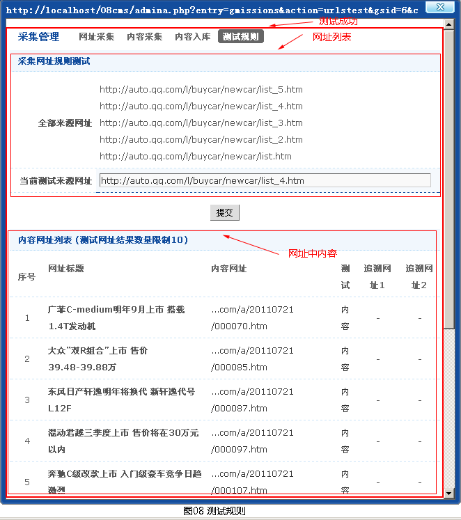
第二、设置内容采集规则
在采集管理中，点击内容采集，就会切换到内容采集规则界面，这个规则是根据用户所需的内容页网址而设置的。（如图-9所示）
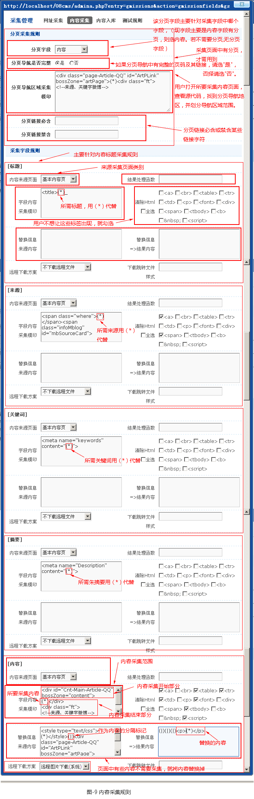
现分析图-9中的基本信息：
a 分页采集规则-主要针对原网页中内容页面上有分页而设置的。（如图-10所示）
a.1 分页字段-该分页字段主要针对采集字段中哪个字段，（现字段主要是内容字段有分页，则选内容。若不需要分页,无分页
字段）。
a.2 分页导航是否完整-如果分页导航中有完整的页码及其链接，请选"是"，否择请选"否"。
a.3 分页导航区域采集模印-用户打开原网页中内容页面，查看源代码，找到有分页导航，并划分导航区域范围。
a.4 分页链接必含与分页链接禁含-分页链接必含或禁含某些链接字符。
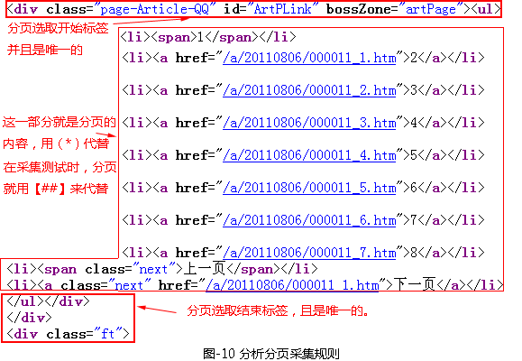
b 采集字段规则-主要针对用户在采集模型管理时，勾选所需采集字段，就会在内容采集规则中出现，并且逐一设置规则。现就以内容字段如何根据原网址内容页设置规则作为实例（如图-11所示）
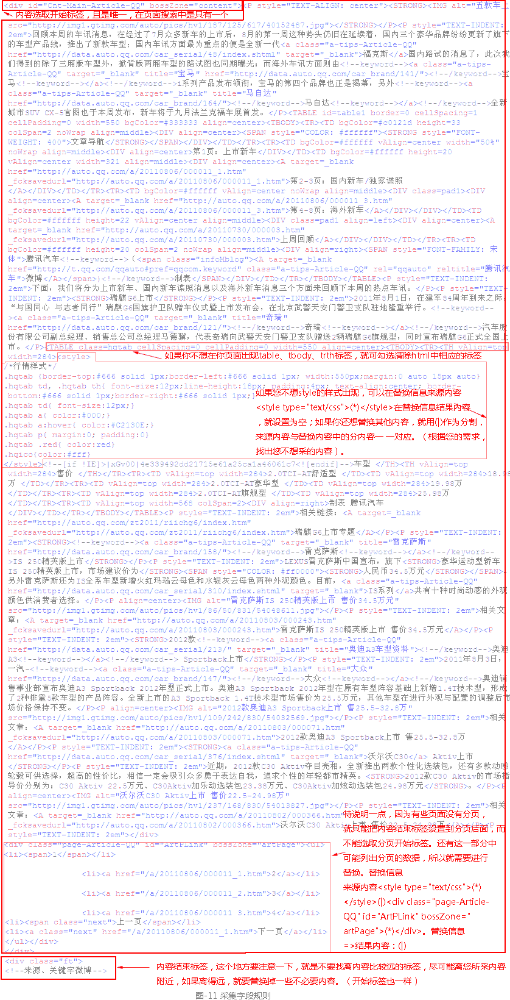
b.1 内容来源页面-来源采集页面类别。
b.2 结果处理函数-作为该字段内容采集的最后环节处理，该函数必须是PHP内置函数或在 ./include/extend/custom.fun.php中定义的函数，以标记(*)为参数表示该参数是当前内容。
b.3 字段内容采集模印-设置内容采集范围
b.4 清除Html-清除用户不想页面中出现的标签。
b.5 替换信息来源内容与替换信息=>结果内容-替换掉用户某些不想采集的内容，另外，该处可以替换多个内容，以(|)（圆括号中加竖线）作为内容的分隔标记，来源内容与替换内容中的分内容一一对应，当替换内容中该分内容为空时，表示过滤。在每个来源分内容中可以包含一个且级能包含一个(*)作为需要保留的可变内容。
b.6 远程下载方案-要是选择远程图片下载（系统）就会把远程图片下载到本地，若是不下载远程文件，则不会下载。
b.7 下载跳转文件样式-下载跳转文件样式：如果有使用其它扩展名包装的远程附件需要下载，请设定其链接样式必须包含的字串，提高下载效率。
c 设置完内容采集规则后，就要进行测试，到测试规则查看。（如图-12，图-13所示）
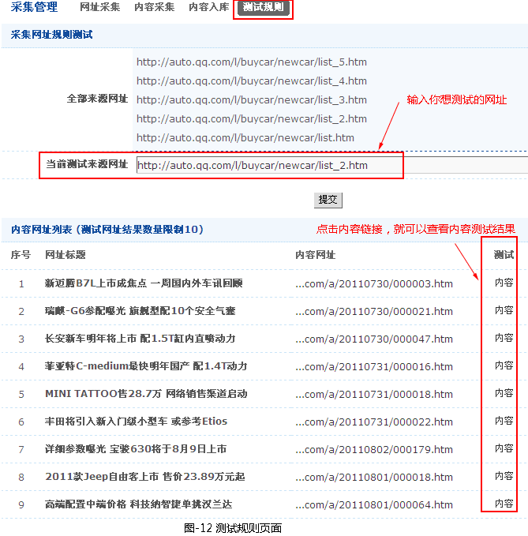
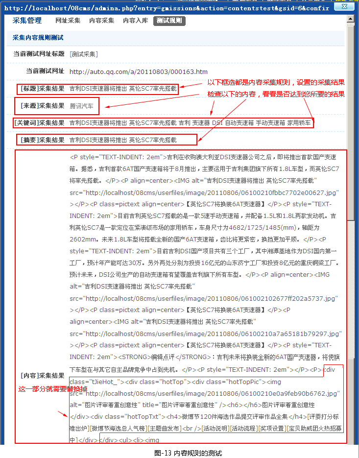
注意一点就是测试内容采集时，分页是用[##]来表示。这个作用就是在用户本站上[##]是作为分页符。
第三、内容入库-入库之前，用户希望选择哪些字段。（如图-14所示）
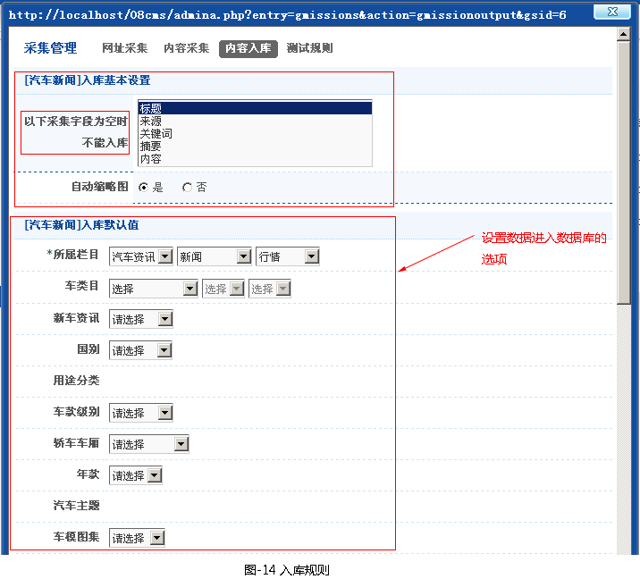
第四、测试规则-就是用来测试列表页与内容页中采集规则。
- 2.4 采集收尾
- 采集规则完毕后，就可以进行采集，采集管理->采集任务管理中。有两种方法，第一种就是一键采集，就是网址、内容、入库一次性采集操作。第二种就是按网址、内容、入库这三部，一步一步操作。可以在管理链接中查看结果。（如图-15所示）（由于图多，就只截一个页面逐步采集过程图，这一部分挺简单的，点击这几个采集链接测试一下，方可明白。）
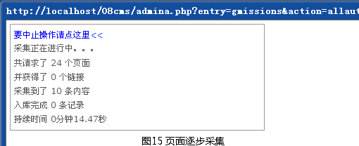